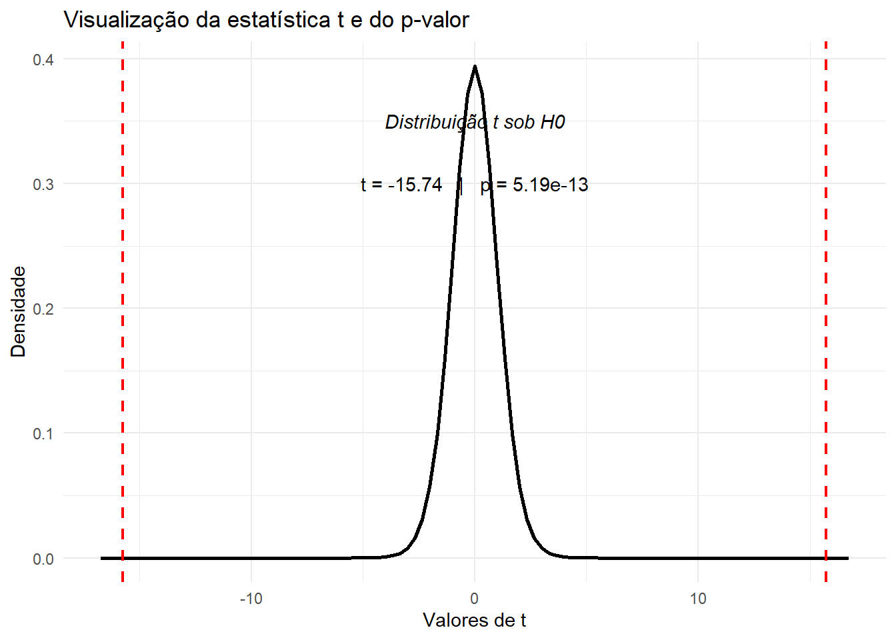
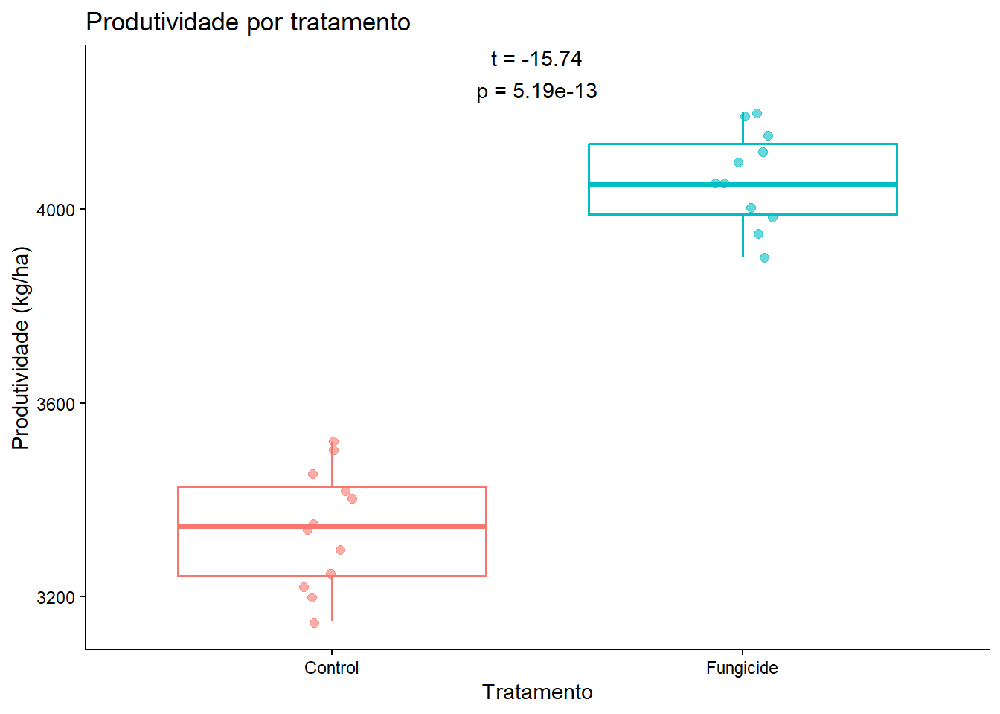

library(tidyverse)
library(broom)Aula 3 – Importação, integração, teste t e visualização de dados no R
Fluxo didático com tidyverse, joins e comparação de médias
1 Introdução
Nesta aula vamos construir um fluxo completo de trabalho para dados experimentais salvos em múltiplos arquivos. Em uma situação real de pesquisa, é comum receber bases produzidas por pessoas diferentes, em anos diferentes e com pequenas inconsistências de nomes, categorias e formatos. Por isso, antes de ajustar modelos ou produzir gráficos, precisamos organizar a base de dados de forma coerente.
Ao longo desta aula, vamos:
- importar arquivos de anos distintos;
- inspecionar a estrutura de cada tabela;
- padronizar nomes de colunas;
- harmonizar categorias;
- unir tabelas por linhas;
- adicionar informações auxiliares com
join; - comparar médias de produtividade entre tratamentos com o teste t;
- visualizar o valor da estatística t e o p-valor;
- construir um gráfico final anotado com o resultado do teste.
2 Objetivos
Ao final da aula, você deverá ser capaz de:
- importar dados de múltiplos arquivos
.csv; - reconhecer inconsistências entre tabelas;
- padronizar variáveis com
rename(),mutate()eselect(); - empilhar tabelas com
bind_rows(); - enriquecer tabelas com
left_join(); - executar e interpretar um teste t para comparar duas médias;
- relacionar o teste t com sua representação gráfica;
- construir gráficos informativos com
ggplot2.
3 Arquivos utilizados
Nesta aula serão usados os seguintes arquivos:
experiment_2022.csvexperiment_2023.csvexperiment_2024.csvlocation_info.csv
Todos os arquivos devem estar salvos na mesma pasta do documento Quarto, ou em uma pasta cujo caminho seja informado corretamente no código.
4 1. Carregar os pacotes
Começamos carregando os pacotes que serão usados ao longo da análise. O tidyverse reúne funções importantes para importação, transformação e visualização de dados. O pacote broom será útil para organizar a saída do teste estatístico em formato de tabela.
5 2. Importar os arquivos anuais
Cada arquivo representa um ano de experimento. A primeira etapa é importar cada um separadamente e armazená-los em objetos com nomes claros e sequenciais.
dados_2022_bruto <- read_csv("experiment_2022.csv")
dados_2023_bruto <- read_csv("experiment_2023.csv")
dados_2024_bruto <- read_csv("experiment_2024.csv")6 3. Inspecionar a estrutura das tabelas
Antes de unir arquivos, precisamos entender como eles estão organizados. A função glimpse() mostra os nomes das colunas, os tipos de variáveis e uma prévia dos valores.
glimpse(dados_2022_bruto)Rows: 8
Columns: 7
$ year <dbl> 2022, 2022, 2022, 2022, 2022, 2022, 2022, 2022
$ location <chr> "Vicosa", "Vicosa", "Vicosa", "Vicosa", "Uberlandia", "Ube…
$ cultivar <chr> "A", "A", "B", "B", "A", "A", "B", "B"
$ block <dbl> 1, 2, 1, 2, 1, 2, 1, 2
$ treatment <chr> "Control", "Fungicide", "Control", "Fungicide", "Control",…
$ severity <dbl> 42, 18, 36, 14, 38, 16, 31, 12
$ yield_kg_ha <dbl> 3200, 3950, 3400, 4100, 3300, 4050, 3500, 4200glimpse(dados_2023_bruto)Rows: 8
Columns: 7
$ Year <dbl> 2023, 2023, 2023, 2023, 2023, 2023, 2023, 2023
$ site <chr> "Vicosa", "Vicosa", "Vicosa", "Vicosa", "Uberlândia", "Uberlândi…
$ cult <chr> "A", "A", "B", "B", "A", "A", "B", "B"
$ rep <dbl> 1, 2, 1, 2, 1, 2, 1, 2
$ trt <chr> "ctrl", "fung", "ctrl", "fung", "ctrl", "fung", "ctrl", "fung"
$ sev <dbl> 45, 20, 37, 15, 40, 17, 33, 13
$ yield <dbl> 3150, 3900, 3350, 4050, 3250, 4000, 3450, 4150glimpse(dados_2024_bruto)Rows: 8
Columns: 6
$ location <chr> "Vicosa", "Vicosa", "Vicosa", "Vicosa", "Uberlandia", "Ub…
$ cultivar <chr> "A", "A", "B", "B", "A", "A", "B", "B"
$ block <dbl> 1, 2, 1, 2, 1, 2, 1, 2
$ treatment <chr> "Control", "Fungicide", "Control", "Fungicide", "Control"…
$ severity_pct <dbl> 41, NA, 34, 14, 39, 18, NA, 12
$ yield_kg_ha <dbl> 3220, 3980, 3420, 4120, 3340, NA, 3520, 4190Ao observar a estrutura das tabelas, note que algumas colunas equivalentes têm nomes diferentes entre anos. Esse é um dos problemas mais comuns em dados reais. Por exemplo, a mesma informação pode aparecer como:
yearem um arquivo eYearem outro;locationem um arquivo esiteem outro;yield_kg_haem um arquivo eyieldem outro.
Além disso, as categorias de tratamento também podem variar. Em um ano, o tratamento pode aparecer como "Control" e "Fungicide", enquanto em outro aparece abreviado como "ctrl" e "fung".
7 4. Padronizar o arquivo de 2022
O arquivo de 2022 já está próximo do formato final desejado, mas vamos manter uma convenção única de nomes para que os três anos possam ser combinados sem dificuldade.
dados_2022 <- dados_2022_bruto |>
rename(
Year = year,
site = location,
cult = cultivar,
rep = block,
trt = treatment,
sev = severity,
yld = yield_kg_ha
)Vamos conferir o resultado.
glimpse(dados_2022)Rows: 8
Columns: 7
$ Year <dbl> 2022, 2022, 2022, 2022, 2022, 2022, 2022, 2022
$ site <chr> "Vicosa", "Vicosa", "Vicosa", "Vicosa", "Uberlandia", "Uberlandia…
$ cult <chr> "A", "A", "B", "B", "A", "A", "B", "B"
$ rep <dbl> 1, 2, 1, 2, 1, 2, 1, 2
$ trt <chr> "Control", "Fungicide", "Control", "Fungicide", "Control", "Fungi…
$ sev <dbl> 42, 18, 36, 14, 38, 16, 31, 12
$ yld <dbl> 3200, 3950, 3400, 4100, 3300, 4050, 3500, 42008 5. Padronizar o arquivo de 2023
No arquivo de 2023, alguns nomes já estão próximos do padrão que queremos, mas ainda precisamos harmonizar as categorias de tratamento e os nomes dos locais.
dados_2023 <- dados_2023_bruto |>
rename(
yld = yield
) |>
mutate(
trt = case_match(
trt,
"ctrl" ~ "Control",
"fung" ~ "Fungicide",
.default = trt
),
site = case_match(
site,
"Uberlândia" ~ "Uberlandia",
.default = site
)
)glimpse(dados_2023)Rows: 8
Columns: 7
$ Year <dbl> 2023, 2023, 2023, 2023, 2023, 2023, 2023, 2023
$ site <chr> "Vicosa", "Vicosa", "Vicosa", "Vicosa", "Uberlandia", "Uberlandia…
$ cult <chr> "A", "A", "B", "B", "A", "A", "B", "B"
$ rep <dbl> 1, 2, 1, 2, 1, 2, 1, 2
$ trt <chr> "Control", "Fungicide", "Control", "Fungicide", "Control", "Fungi…
$ sev <dbl> 45, 20, 37, 15, 40, 17, 33, 13
$ yld <dbl> 3150, 3900, 3350, 4050, 3250, 4000, 3450, 41509 6. Padronizar o arquivo de 2024
O arquivo de 2024 apresenta dois problemas adicionais: o ano precisa ser criado como coluna, e a variável de severidade aparece com o nome severity_pct. Também existem espaços extras em algumas categorias de tratamento, o que pode causar problemas posteriores.
dados_2024 <- dados_2024_bruto |>
mutate(Year = 2024) |>
rename(
site = location,
cult = cultivar,
rep = block,
trt = treatment,
sev = severity_pct,
yld = yield_kg_ha
) |>
mutate(
trt = str_trim(trt),
site = case_match(
site,
"Viçosa" ~ "Vicosa",
"Uberlândia" ~ "Uberlandia",
.default = site
)
) |>
select(Year, site, cult, rep, trt, sev, yld)glimpse(dados_2024)Rows: 8
Columns: 7
$ Year <dbl> 2024, 2024, 2024, 2024, 2024, 2024, 2024, 2024
$ site <chr> "Vicosa", "Vicosa", "Vicosa", "Vicosa", "Uberlandia", "Uberlandia…
$ cult <chr> "A", "A", "B", "B", "A", "A", "B", "B"
$ rep <dbl> 1, 2, 1, 2, 1, 2, 1, 2
$ trt <chr> "Control", "Fungicide", "Control", "Fungicide", "Control", "Fungi…
$ sev <dbl> 41, NA, 34, 14, 39, 18, NA, 12
$ yld <dbl> 3220, 3980, 3420, 4120, 3340, NA, 3520, 419010 7. Conferir se os nomes das colunas agora coincidem
Antes de empilhar os arquivos, é importante verificar se os três objetos têm exatamente a mesma estrutura.
names(dados_2022)[1] "Year" "site" "cult" "rep" "trt" "sev" "yld" names(dados_2023)[1] "Year" "site" "cult" "rep" "trt" "sev" "yld" names(dados_2024)[1] "Year" "site" "cult" "rep" "trt" "sev" "yld" Se os nomes coincidirem e estiverem na mesma ordem, podemos unir as tabelas com segurança.
11 8. Unir os três anos em uma única tabela
A função bind_rows() empilha tabelas por linhas. Ela é usada quando queremos juntar observações de anos, locais ou experimentos diferentes, desde que as colunas representem as mesmas variáveis.
dados_empilhados <- bind_rows(dados_2022, dados_2023, dados_2024)glimpse(dados_empilhados)Rows: 24
Columns: 7
$ Year <dbl> 2022, 2022, 2022, 2022, 2022, 2022, 2022, 2022, 2023, 2023, 2023,…
$ site <chr> "Vicosa", "Vicosa", "Vicosa", "Vicosa", "Uberlandia", "Uberlandia…
$ cult <chr> "A", "A", "B", "B", "A", "A", "B", "B", "A", "A", "B", "B", "A", …
$ rep <dbl> 1, 2, 1, 2, 1, 2, 1, 2, 1, 2, 1, 2, 1, 2, 1, 2, 1, 2, 1, 2, 1, 2,…
$ trt <chr> "Control", "Fungicide", "Control", "Fungicide", "Control", "Fungi…
$ sev <dbl> 42, 18, 36, 14, 38, 16, 31, 12, 45, 20, 37, 15, 40, 17, 33, 13, 4…
$ yld <dbl> 3200, 3950, 3400, 4100, 3300, 4050, 3500, 4200, 3150, 3900, 3350,…12 9. Padronizar a tabela empilhada em nomes mais descritivos
Até aqui usamos nomes curtos para facilitar a padronização entre anos. Agora que os dados já estão unidos, podemos renomear as colunas para uma forma mais clara e didática.
dados_experimento <- dados_empilhados |>
rename(
year = Year,
location = site,
cultivar = cult,
block = rep,
treatment = trt,
severity = sev,
yield_kg_ha = yld
)glimpse(dados_experimento)Rows: 24
Columns: 7
$ year <dbl> 2022, 2022, 2022, 2022, 2022, 2022, 2022, 2022, 2023, 2023…
$ location <chr> "Vicosa", "Vicosa", "Vicosa", "Vicosa", "Uberlandia", "Ube…
$ cultivar <chr> "A", "A", "B", "B", "A", "A", "B", "B", "A", "A", "B", "B"…
$ block <dbl> 1, 2, 1, 2, 1, 2, 1, 2, 1, 2, 1, 2, 1, 2, 1, 2, 1, 2, 1, 2…
$ treatment <chr> "Control", "Fungicide", "Control", "Fungicide", "Control",…
$ severity <dbl> 42, 18, 36, 14, 38, 16, 31, 12, 45, 20, 37, 15, 40, 17, 33…
$ yield_kg_ha <dbl> 3200, 3950, 3400, 4100, 3300, 4050, 3500, 4200, 3150, 3900…13 10. Adicionar coordenadas geográficas com left_join()
Em muitas análises, precisamos enriquecer uma base principal com informações auxiliares. Isso é feito com a família join. Neste exemplo, vamos acrescentar coordenadas geográficas aos locais do experimento.
Primeiro, importamos a tabela auxiliar.
coordenadas_locais <- read_csv("location_info.csv")
coordenadas_locais# A tibble: 3 × 3
location state altitude_m
<chr> <chr> <dbl>
1 Vicosa MG 648
2 Uberlandia MG 863
3 PassoFundo RS 687Agora usamos left_join(). Essa função mantém todas as linhas da tabela principal e acrescenta colunas da tabela auxiliar quando existe correspondência entre as chaves informadas.
dados_experimento_geo <- dados_experimento |>
left_join(coordenadas_locais, by = c("location" = "location"))glimpse(dados_experimento_geo)Rows: 24
Columns: 9
$ year <dbl> 2022, 2022, 2022, 2022, 2022, 2022, 2022, 2022, 2023, 2023…
$ location <chr> "Vicosa", "Vicosa", "Vicosa", "Vicosa", "Uberlandia", "Ube…
$ cultivar <chr> "A", "A", "B", "B", "A", "A", "B", "B", "A", "A", "B", "B"…
$ block <dbl> 1, 2, 1, 2, 1, 2, 1, 2, 1, 2, 1, 2, 1, 2, 1, 2, 1, 2, 1, 2…
$ treatment <chr> "Control", "Fungicide", "Control", "Fungicide", "Control",…
$ severity <dbl> 42, 18, 36, 14, 38, 16, 31, 12, 45, 20, 37, 15, 40, 17, 33…
$ yield_kg_ha <dbl> 3200, 3950, 3400, 4100, 3300, 4050, 3500, 4200, 3150, 3900…
$ state <chr> "MG", "MG", "MG", "MG", "MG", "MG", "MG", "MG", "MG", "MG"…
$ altitude_m <dbl> 648, 648, 648, 648, 863, 863, 863, 863, 648, 648, 648, 648…14 11. Conferir valores ausentes
Após unir tabelas, é sempre bom verificar se ainda existem valores ausentes nas variáveis principais. Isso ajuda a decidir como resumir e analisar os dados.
dados_experimento_geo |>
summarise(
n_na_severity = sum(is.na(severity)),
n_na_yield = sum(is.na(yield_kg_ha)),
n_na_state = sum(is.na(state)),
n_na_altitude = sum(is.na(altitude_m))
)# A tibble: 1 × 4
n_na_severity n_na_yield n_na_state n_na_altitude
<int> <int> <int> <int>
1 2 1 0 015 12. Resumos descritivos iniciais
Antes de qualquer teste inferencial, é recomendável resumir os dados. Vamos calcular as médias de severidade e produtividade por tratamento e por ano.
resumo_tratamento_ano <- dados_experimento_geo |>
group_by(year, treatment) |>
summarise(
media_severity = mean(severity, na.rm = TRUE),
media_yield = mean(yield_kg_ha, na.rm = TRUE),
n = n(),
.groups = "drop"
)
resumo_tratamento_ano# A tibble: 6 × 5
year treatment media_severity media_yield n
<dbl> <chr> <dbl> <dbl> <int>
1 2022 Control 36.8 3350 4
2 2022 Fungicide 15 4075 4
3 2023 Control 38.8 3300 4
4 2023 Fungicide 16.2 4025 4
5 2024 Control 38 3375 4
6 2024 Fungicide 14.7 4097. 4Também podemos resumir apenas por tratamento, considerando todos os anos em conjunto.
resumo_tratamento <- dados_experimento_geo |>
group_by(treatment) |>
summarise(
media_severity = mean(severity, na.rm = TRUE),
dp_severity = sd(severity, na.rm = TRUE),
media_yield = mean(yield_kg_ha, na.rm = TRUE),
dp_yield = sd(yield_kg_ha, na.rm = TRUE),
n = n(),
.groups = "drop"
)
resumo_tratamento# A tibble: 2 × 6
treatment media_severity dp_severity media_yield dp_yield n
<chr> <dbl> <dbl> <dbl> <dbl> <int>
1 Control 37.8 4.17 3342. 121. 12
2 Fungicide 15.4 2.66 4063. 98.8 1216 13. Comparação de médias com o teste t
Agora vamos comparar as médias de produtividade entre os dois tratamentos: Control e Fungicide.
O teste t para duas amostras independentes é um procedimento inferencial usado para avaliar se a diferença entre duas médias amostrais é grande o suficiente para sugerir que as médias populacionais também diferem.
16.1 13.1 Hipóteses do teste
Ao aplicar o teste t, formulamos duas hipóteses:
Hipótese nula (\(H_0\)): as médias populacionais são iguais
\[H_0 : \mu_1 = \mu_2\]Hipótese alternativa (\(H_1\)): as médias populacionais são diferentes
\[H_1 : \mu_1 \neq \mu_2\]
No nosso exemplo, queremos comparar a produtividade média entre os tratamentos Control e Fungicide.
16.2 13.2 Estatística do teste
A estatística t compara a diferença observada entre médias com a variabilidade dessa diferença.
Na forma clássica do teste com variâncias assumidas como iguais, a estatística é dada por:
\[ t = \frac{\bar{x}_1 - \bar{x}_2}{s_p\sqrt{\frac{1}{n_1} + \frac{1}{n_2}}} \]
em que:
- \(\bar{x}_1\) e \(\bar{x}_2\) são as médias amostrais;
- \(n_1\) e \(n_2\) são os tamanhos das amostras;
- \(s_p\) é o desvio-padrão combinado (pooled standard deviation), calculado por:
\[ s_p = \sqrt{\frac{(n_1 - 1)s_1^2 + (n_2 - 1)s_2^2}{n_1 + n_2 - 2}} \]
em que:
- \(s_1^2\) e \(s_2^2\) são as variâncias amostrais dos dois grupos.
Na prática, o R calcula automaticamente a estatística t e o p-valor quando usamos t.test(). O mais importante neste momento é entender a lógica: quanto maior a diferença entre médias em relação à variabilidade dos dados, mais extremo tende a ser o valor de t.
16.3 13.3 Ajustar o teste no R
Vamos aplicar o teste t à produtividade.
teste_t_yield <- t.test(yield_kg_ha ~ treatment, data = dados_experimento_geo)
teste_t_yield
Welch Two Sample t-test
data: yield_kg_ha by treatment
t = -15.737, df = 20.762, p-value = 5.186e-13
alternative hypothesis: true difference in means between group Control and group Fungicide is not equal to 0
95 percent confidence interval:
-816.4113 -625.7099
sample estimates:
mean in group Control mean in group Fungicide
3341.667 4062.727 A saída mostra, entre outras informações:
- o valor da estatística t;
- os graus de liberdade;
- o p-valor;
- as médias estimadas dos dois grupos.
Também podemos organizar essa saída em formato de tabela com broom::tidy().
resultado_tidy <- tidy(teste_t_yield)
resultado_tidy# A tibble: 1 × 10
estimate estimate1 estimate2 statistic p.value parameter conf.low conf.high
<dbl> <dbl> <dbl> <dbl> <dbl> <dbl> <dbl> <dbl>
1 -721. 3342. 4063. -15.7 5.19e-13 20.8 -816. -626.
# ℹ 2 more variables: method <chr>, alternative <chr>17 14. Interpretar o valor de t e o p-valor
O valor de t indica quantos “erros-padrão” separam a diferença observada entre médias do valor esperado sob a hipótese nula. Quanto mais distante de zero estiver esse valor, maior a evidência contra \(H_0\).
O p-valor representa a probabilidade de observar um valor de t tão extremo quanto o obtido, ou mais extremo, caso a hipótese nula seja verdadeira.
Se o p-valor for pequeno, consideramos que os dados fornecem evidência para rejeitar a hipótese nula.
Vamos extrair os valores de interesse para usar nos gráficos seguintes.
t_observado <- unname(teste_t_yield$statistic)
gl_observado <- unname(teste_t_yield$parameter)
p_observado <- unname(teste_t_yield$p.value)
t_observado[1] -15.73743gl_observado[1] 20.7621p_observado[1] 5.186022e-1318 15. Visualizar a estatística t na distribuição do teste
Uma forma didática de entender o teste é visualizar onde o valor observado de t cai na distribuição t de Student sob a hipótese nula.
No gráfico abaixo:
- a curva representa a distribuição t;
- a linha vertical mostra o valor observado de t;
- a área sombreada representa a região associada ao p-valor.
limite_x <- max(4, abs(t_observado) + 1)
ggplot(data.frame(x = c(-limite_x, limite_x)), aes(x)) +
stat_function(
fun = dt,
args = list(df = gl_observado),
linewidth = 1
) +
geom_vline(
xintercept = c(-abs(t_observado), abs(t_observado)),
colour = "red",
linetype = "dashed",
linewidth = 0.8
) +
stat_function(
fun = dt,
args = list(df = gl_observado),
xlim = c(-limite_x, -abs(t_observado)),
geom = "area",
fill = "red",
alpha = 0.25
) +
stat_function(
fun = dt,
args = list(df = gl_observado),
xlim = c(abs(t_observado), limite_x),
geom = "area",
fill = "red",
alpha = 0.25
) +
annotate(
"text",
x = 0,
y = 0.35,
label = "Distribuição t sob H0",
fontface = "italic"
) +
annotate(
"text",
x = 0,
y = 0.30,
label = paste0("t = ", round(t_observado, 2),
" | p = ", signif(p_observado, 3))
) +
labs(
title = "Visualização da estatística t e do p-valor",
x = "Valores de t",
y = "Densidade"
) +
theme_minimal()
19 16. Construir um gráfico de produtividade anotado com o teste t
Agora que já ajustamos e interpretamos o teste, podemos construir um gráfico de produtividade por tratamento e acrescentar o resultado estatístico ao painel.
A ordem importa: primeiro fazemos a análise, depois usamos seu resultado para enriquecer a visualização.
rotulo_teste <- paste0(
"t = ", round(t_observado, 2), "\n",
"p = ", signif(p_observado, 3)
)
grafico_yield <- dados_experimento_geo |>
ggplot(aes(x = treatment, y = yield_kg_ha, color = treatment)) +
geom_boxplot(outlier.shape = NA, linewidth = 0.6) +
geom_jitter(width = 0.08, alpha = 0.6, size = 2) +
annotate(
geom = "text",
x = 1.5,
y = max(dados_experimento_geo$yield_kg_ha, na.rm = TRUE) + 80,
label = rotulo_teste
) +
labs(
x = "Tratamento",
y = "Produtividade (kg/ha)",
title = "Produtividade por tratamento"
) +
theme_classic() +
theme(legend.position = "none")
grafico_yield
Se desejado, o gráfico pode ser salvo em arquivo.
ggsave(
"grafico_produtividade_tratamento.png",
grafico_yield,
width = 6,
height = 5,
bg = "white"
)20 17. Considerações finais
Esta aula mostrou um fluxo muito comum em análise de dados experimentais:
- importar múltiplos arquivos;
- inspecionar a estrutura das tabelas;
- padronizar nomes e categorias;
- unir arquivos anuais;
- adicionar informações auxiliares com
join; - resumir os dados de forma descritiva;
- comparar tratamentos com um teste inferencial;
- representar a análise em um gráfico final.
Esse fluxo reforça uma ideia importante: uma boa análise não começa no teste estatístico. Ela começa na organização da base e no entendimento claro do que cada variável representa.
21 18. Exercícios sugeridos
- Calcule a severidade média por local e por tratamento.
- Construa um gráfico de severidade por tratamento.
- Aplique um teste t para comparar a severidade média entre os tratamentos.
- Verifique se o resultado do teste para severidade é consistente com o gráfico.
- Modifique o código do gráfico final para anotar o teste da severidade em vez do teste da produtividade.